GitHub
Contents
GitHub#
ここまで、Gitをローカル環境での利用方法をまなびました。Gitは分散型のバージョン管理システムで、同じプロジェクトに関するリポジトリをネットワーク上に複数置くこともできます。この性質を利用すると、色々なことができるようになります。
複数人で一つのプログラムを編集したり、修正作業を依頼したりすること
共同作業の進捗を管理すること
リモートリポジトリで作業をバックアップすること
Git機能を搭載したプロジェクト管理サービスは数多くありますが、本授業はその中でも一番使われているGithubを利用していきます。
GitHubの初期設定#
GitHubアカウントを作成します。
ターミナルを開きます。
次の git コマンドでユーザー情報を設定する。ここで、
user.nameはGitHubのユーザ名、user.emailはGitHub登録用のメールを使ってください。
git config --global user.name "First-name Family-name"
git config --global user.email "username@example.com"
SSH (Secure Shell プロトコル) を使用して、GitHubのリポジトリ内のデータにアクセスして書き込むことができます。 SSH経由で接続する場合は、ローカルコンピューター上の秘密キーファイルを使用して認証します。SSH を設定するときは、新しいプライベート SSH キーを生成し、SSH エージェントに追加する必要があります。次のコマンドでSSHキーを生成する。
cd ~/.ssh
ssh-keygen -t rsa
任意のパスフレーズを入力して
Enter（2回）。パスフレーズが不要であれば空欄のままEnterでよい。SSH Keyを格納するディレクトリに移動します。
lsでファイルを確認します。id_rsa.pubというファイルがあるはずです。cat id_rsa.pubでSSHキーのファイルを開く、表示されたssh-rsa XXXという形の内容はSSHキーになります。SHHキーをコピーします。GitHub のアカウントにパブリック SSH キーを追加する必要もあります。Githubのページの右上で、プロフィール画像をクリックし、続いて
Settings→Access→SSH and GPG keys→New SSH keyという順番でクリックしてください。クリップボードの内容を
Keyフィールドに貼り付けます。Add SSH keyをクリックしてたら、SSHの登録が完了です。ターミナルで
ssh -T git@github.comを実行します。もしGitHubと連携できましたら、以下の内容が表示されます。
Hi USERNAME! You've successfully authenticated, but GitHub does not provide shell access.
リモートリポジトリに関する操作#
リモートリポジトリの作成と連携#
ページの右上隅で、[\(+\)]ドロップダウンメニューを使用して、 [新しいリポジトリ] を選択します。

リポジトリ名を入力します。必要に応じて、リポジトリの説明を追加します。
リポジトリの可視性を選択してください。パブリックリポジトリには、インターネット上の誰でもアクセスできます。プライベートリポジトリには、自分や招待した人のみがアクセスできます。
[Create repository](リポジトリの作成) をクリックします。リモートリポジトリのSSHアドレスをコピーしておきます。 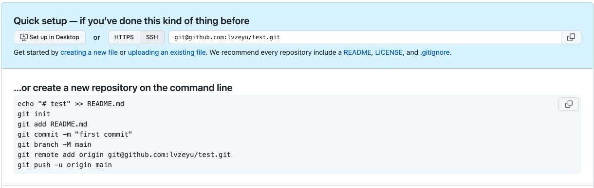
以下のコマンドでリモートリポジトリとローカルリポジトリに対応づけます。各自のSSHアドレスを入れ替えてください。
git remote add origin git@github.com:lvzeyu/test.git
git remoteでリモートリポジトリの一覧を確認します。正しく追加されたら、originというリモートリポジトリが表示されます。
新しいリモートリポジトリの作成 -「ソース管理」→「Branchの発行」をクリックします。
初回はGitHubとの連携認証を行います。指示に従って認証処理を行ってください。
リモートリポジトリの名前を入力し、可視性を選択してください。 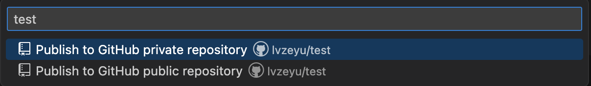
既存リモートブランチの連携
「ソース管理」→ 「
...」→ 「リモート追加」→「GitHubからリモートを追加」でクリックしてください。 - 連携したいリモートリポジトリの名前またはURLで検索してください。リモート名を入力します。ここで
originにしておきましょう。
プッシュ(Push)#
リモートリポジトリにローカルリポジトリでの変更を反映する操作は「プッシュ」といいます。
git remoteでリモートリポジトリとの連携状況を確認します。以下のコマンドでローカルの
mainブランチ変更をリモートのoriginブランチに送ります。
git push -u origin main
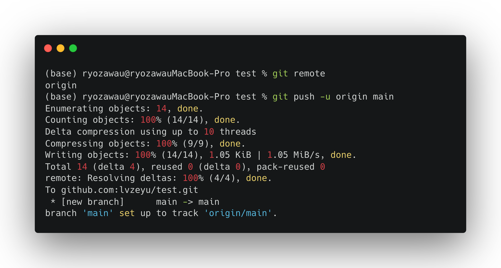
「ソース管理」→ 「REMOTES」でリモートリポジトリとの連携状況を確認します。
「ソース管理」→ 「
...」→ 「プル、プッシュ」→「プッシュ」でクリックします。 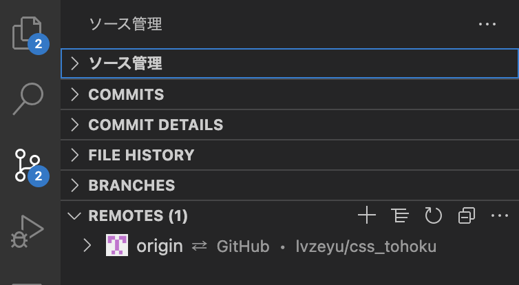
フェッチ(Fetch)#
リモートリポジトリとローカルリポジトリ、それぞれの状況に違いがあるかを調べる操作は、フェッチ(Fetch)といいます。
GitHubでリモートリポジトリのREADMEファイルを作成し、適宜内容を加えて、その変更をコミットします。
ローカルリポジトリの
myfile.txtに任意の変更を加えて、その変更をコミットします。
git fetchでリモートリポジトリの状況を取ってきます。git log origin/mainで確認すると、リモートリポジトリの状態が反映されたはずです。 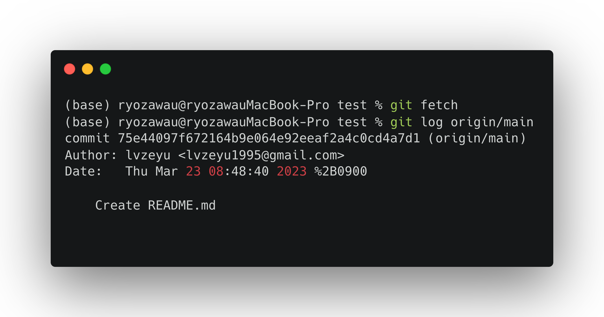
「ソース管理」→ 「
...」→ 「fetch」でフェッチを行います。「ソース管理」→ 「REMOTES」でリモートリポジトリとの最新状況を確認できます。 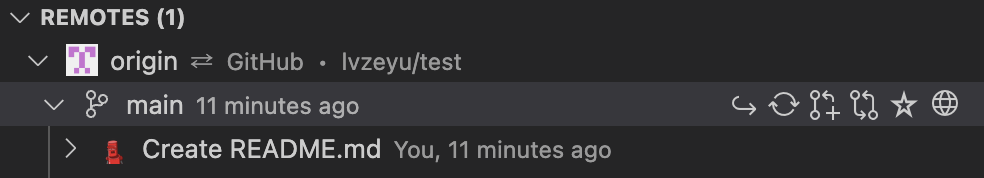
プル(Pull)#
リモートリポジトリに加えられた変更がローカルリポジトリに取り込まれる操作は「プル(Pull)」といいます。
git pullでプル操作を行います。ローカルリポジトリの内容が更新されることを確認できます。
「ソース管理」→ 「
...」→ 「pull」でフェッチを行います。
基本的に、リモートリポジトリで作業する場合、作業前は必ずプルしようことを覚えてください。
最新の状態をプルを忘れ、古いファイルをしてしまった結果、プッシュをするときにエラーが発生し、そこでプルをするとコンフリクトが起きます。特に他のメンバーと共同作業をしているときコンフリクトが発生すると、解決するのはなかなか困難です。
普段から作業を始まる前にプルを行い、1日中でに作業が一段落ついたときもプルするなど、できるだけ頻繁に最新の状態に保っておくと良いでしょう。
Note
git pull, git fetch, git pushの図解

revert#
ローカルリポジトリでは、コミットをした後間違いに気づいたときは、リセットをしてやり直すことができます。
リモートリポジトリにプッシュしてしまった後で間違いに気づいたら、revertでコミットを取り消せることができます。
myfile.txtでの変更をリモートリポジトリにプッシュします。GitHubでプッシュした変更を確認します。
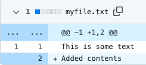
git revertコマンドで打ち消したいコミットを指定します。例えば、
git revert 1453d39
これで、コミットが打ち消されました。そのままプッシュします。
git push
GitHubで、この前のコミットで変更した内容が取り消されたことを確認できました。
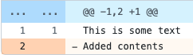
「ソース管理」→ 「COMMITS」でコミットの一覧を確認します。
打ち消したいコミットを選択し、右クリックし、表示されたメニューに「Revert Commit」をクリックします。
プッシュします。
GitHubで、この前のコミットで変更した内容が取り消されたことを確認できました。
revertは「打ち消し」を機能していますが、resetとは違って元に戻すのではなく「間違ったところを訂正する内容のコミットをする」といった作業を行なっています(revert→push)。
なぜこのような設計になるといえば、共同作業の場合、他のメンバーがすでにプルして、変更などをしてしまっているかもしれません。その状態でリモートリポジトリの内容を後戻りさせてしまうと、その差分を埋めるのは困難です。つまり、本質的には、プッシュした内容を「なかったこと」にすることはできません。
プルリクエスト(Pull request)#
ここまでに説明した通り、間違えた内容をプッシュすると、他のメンバーが知らねうちに間違えた内容を適用しまって、不具合の原因になります。
このようなリスクを回避するために、通常はプッシュは慎重に行いながら、「プルリクエスト(Pull request)」を使うことが推奨されます。
プルプルリクエストとは、マージを実行する際に、他のメンバーへの変更通知や変更箇所の比較表示など様々の確認を行うことができる機能です。この機能を使えば、プッシュする前にメンバーにレビューを依頼し、問題がない場合だけブランチにマージをして、変更を確定することができるようになります。
プルリクエストの実例#
ここで、developブランチで作業を行い、mainブランチにプルリクエストをして、確認する上でマージを実行する処理を行いましょう。
developブランチに切り替えて、適宜内容を変更した後、リモートリポジトリに変更内容をプッシュします。
git checkout develop git push --set-upstream origin develop
GitHubで、ブランチの一覧で
mainとdevelopがあることを確認できました。そして、develop had recent pushesというリマインドも表示されています。
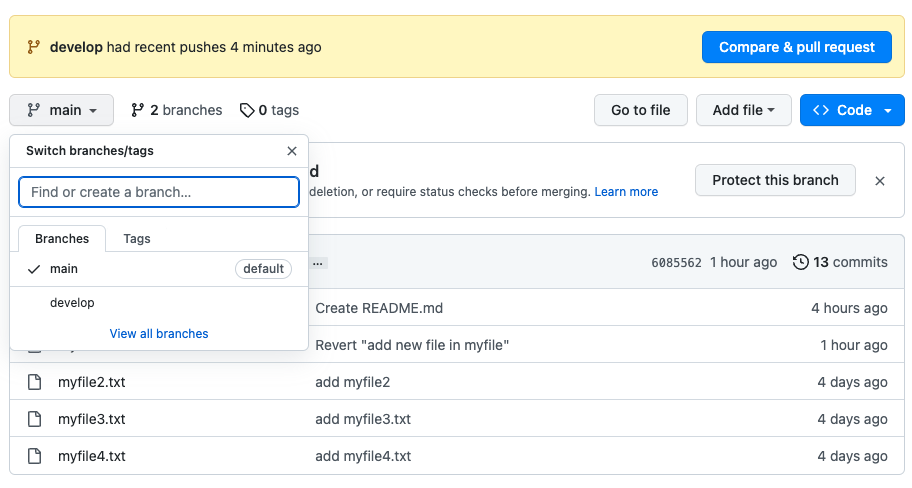
「
Compare&pull request」ボタンをクリックすると、プルリクエストの作成画面に切り替えます。適宜タイトルと説明を編集して、「Create pull request」ボタンを押します。
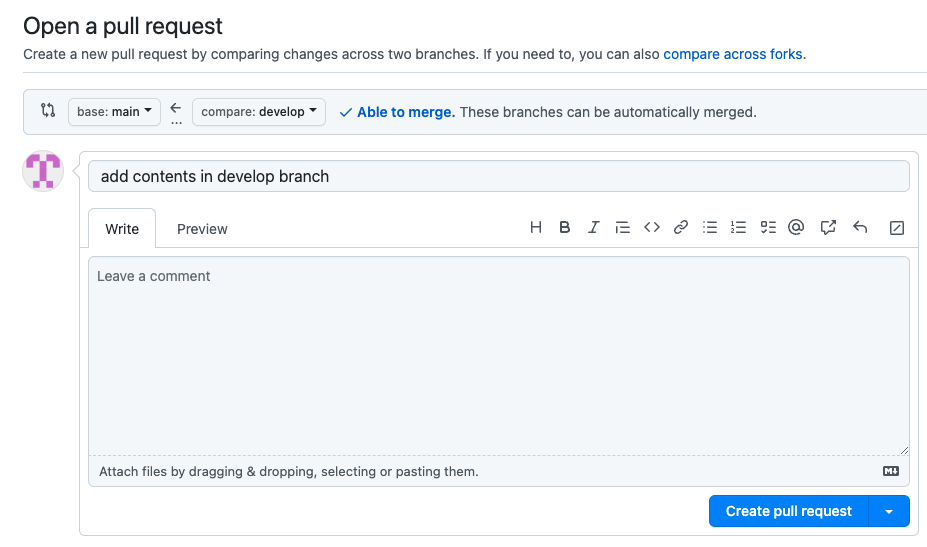
プルリクエストの画面では、プルリクエストが送られたブランチで行われたコミットの履歴を確認できます。
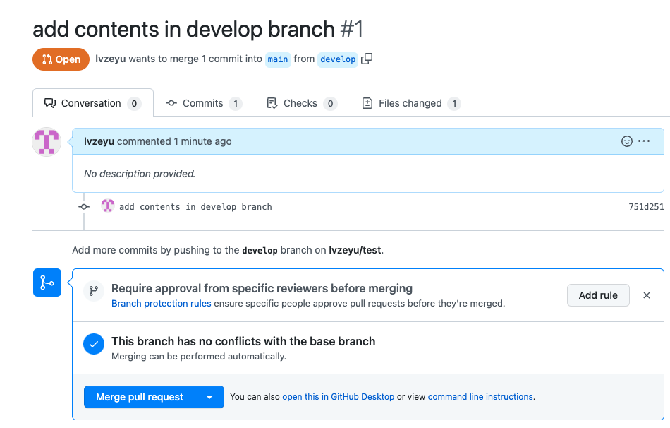
コミットをクリックすると、具体的な変更内容をチェックすることができます。もし気になる箇所があれば、マウスカーソルを近付けると「
+」ボタンが表示されます。ボタンをクリックすると、コメント欄が開くので、コメントを記入し、「Start a review」をクリックします。
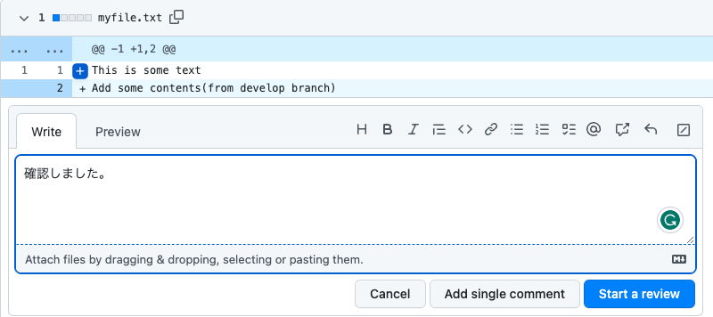
右上の「
Finish your review」ボタンをクリックすると、レニューの種類を選択できます。次に、「Sumbit your review」ボタンをクリックします。再びプルリクエストの画面を表示すると、コメントの履歴も表示されます。ここで引き続き議論することができます。このように、コメントをしたり、コミットとプッシュをしたり、作業を進めていくことができます。
確認と修正が完了すると、「
Merge pull request」ボタンをクリックします。次に、必要に応じてコミットメッセージを入力し、「Confirm merge」ボタンをクリックしたらマージ完了です。mainブランチにおけるdevelopでの変更が反映されますことを確認できます。
Note
レビューの種類
コメント(Comment): コメントだけを送信します。
承認(Approve): pull request で提案された変更のマージを承認します。
変更依頼(Request changes): pull request をマージする前に対処する必要があることを見つけた際に、変更や確認を依頼します。
クローン(Clone)#
リモートリポジトリをコピーしてローカルリポジトリを作る操作は、クローン(Clone)といいます。 クローンをすると、リモートリポジトリの内容が丸ごと新しく作られたローカルリポジトリに複製され、そのリポジトリはクローン元のリモートリポジトリと紐ついた状態になります。
こうして、複数の環境でプログラムの開発が行えるようになります。
クローンのやり方#
ここで、この授業のリモートリポジトリをクローンしてみましょう。
クローンをするためには、まずは目的のリモートリポジトリのアドレスを手に入れる必要があります。リモートリポジトリの画面の右上の「Code」ボタンをクリクリします。
「Clone」というエリアにアドレスで、「SSH」を選択し、リモートリポジトリのアドレスをコピーしておきます。
git@github.com:lvzeyu/chss_2024_assignment.git自分のPCでターミナルを開く、
git cloneコマンドにリモートリポジトリのアドレスを指定すると、そのコピーはディレクトリとしてローカルに作られます。
git clone git@github.com:lvzeyu/chss_2024_assignment.git
GitHubでの共同作業#
GitHub Flow#
ここまで紹介したように、GitとGitHubは豊富な機能が備え、スムーズに開発と共同作業に資することができます。一方で、運用する場合にはルールを定めないとき様々な問題が起こりうるです。
GitHubはプルリクエストを中心とした「GitHub Flow」というワークフローを提唱しています。
mainブランチでは開発しない#
mainブランチは常に最新で正しい状態にしておく、直接mainブランチで作業などは行ってはいけません。
開発する内容ごとに「トピックブランチ」を作成する#
機能の追加・変更、バグフィックスの際には、作業の内容ごとに「トピックブランチ」を分けます。トピックブランチの名前はできるだけ作業内容がわかるものとします。必ずmainブランチからトピックブランチを切って作業を行います。
ブランチは定期的にPushする#
定期的にローカルリポジトリからリモートリポジトリにPushして、ローカルでの作業内容をメンバーと共有しましょう。できるだけマージする際に生じる変更箇所のコンフリクトを回避します。
プルリクエストを使って作業に関するやりとりをする#
プルリクエスト機能を活用して他のメンバーとコミュニケーションをとりましょう。何かコミュニケーションをしたいことがある場合、プルリクエストのコメント欄でやりとりをします。
プルリクエストを使ってにコードレビューを行う#
トピックブランチでの作業が終わったら、レビュアーを指定してプルリクエストのレビューを依頼します。レビュアーは内容を確認して、承認またはコメントをします。
レビューが承認されたらmainブランチにマージする#
コードレビューが承認されたらmainブランチにマージします。マージ後には、できるだけ早く動作検証を行います。問題がなければ、トピックブランチを削除してもよいでしょう。
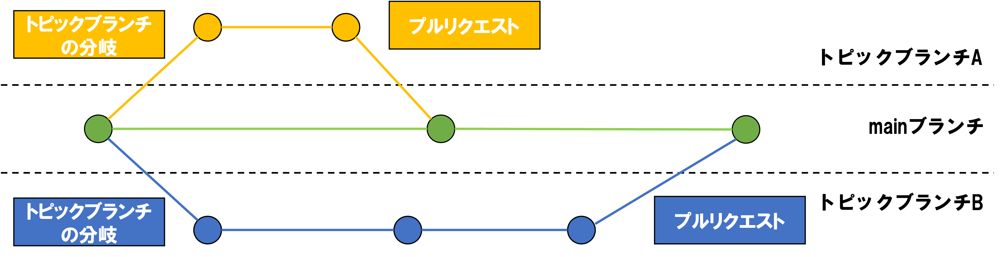
GitHub Issues#
Issueとは「課題」という意味で、開発メンバー間で共有が必要な事項をスレッド形式で立てられる機能です。
見つけた問題点を報告することはもちろん、それ以外にも作業の計画やコードに関する質問を手軽に投稿して、チームメンバーとコミュニケーションすることができます。
Issueは共同作業のため豊富な機能が備えています。具体的には、公式チュトリアルをご参照ください。
コミットまたPull RequestにIssueをリンクすることができます。
他のメンバーにIssueおよびプルリクエストをアサインすることで、誰が特定の Issue やPull Requestで作業しているかが明確になります。
ラベルでIssueを分類します。
GitHubに関する課題#
以下の手順に従って、課題提出するためのリポジトリに課題を提出しましょう。
最新の状況を取得するために、
git pullを行なってください。mainブランチに基づく、各自のブランチを作ってください。git branch [name],[name]では誰なのかわかるように名前付けください。自分のブランチに移動してください(ここ重要!)。VSCodeの左下で自分のブランチにいるかどうかを確認してください。
Assignment Submissionというフォルダの中に、[name].txtというファイルを作成してください([name]では誰なのかわかるように名前付けください)。git commitで操作をコミットしてください。メッセージはXXXが課題を提出しましたで書いてください。コミットが終わりましたら、操作をリモートリポジトリにプッシュします。「VScode」→「ソース管理」→「Branchの発行」を押してください。
GitHubのリモートリポジトリでファイルが同期されたかどうかを確認してください。「 XXX had recent pushes less than a minute ago」のようなメッセージが表示されるはずです。
mainブランチにマージするのpull requestを行います。「Compare&pull request」を押して、次の画面でタイトルとコメントを適宜入力し、Create pull requestを押してください。教員がpull requestを確認するから承認しますので、承認まで待ってください。